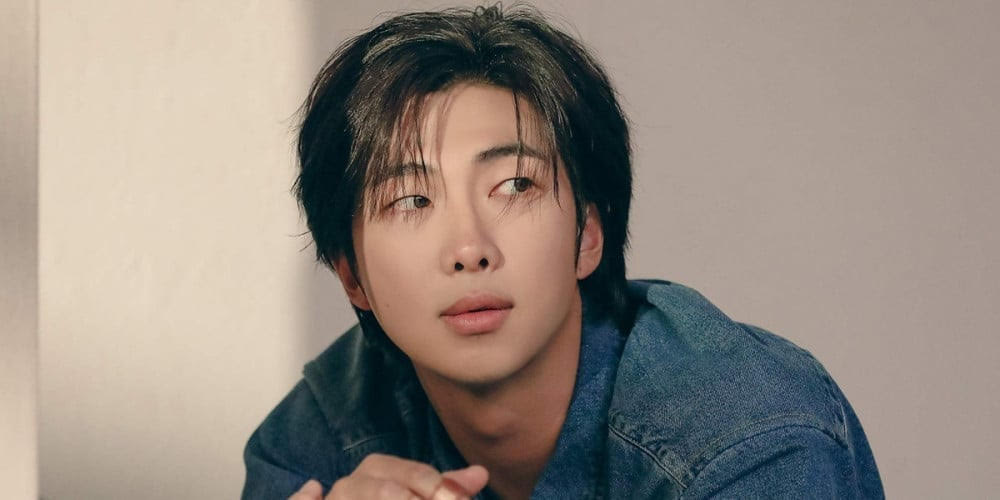
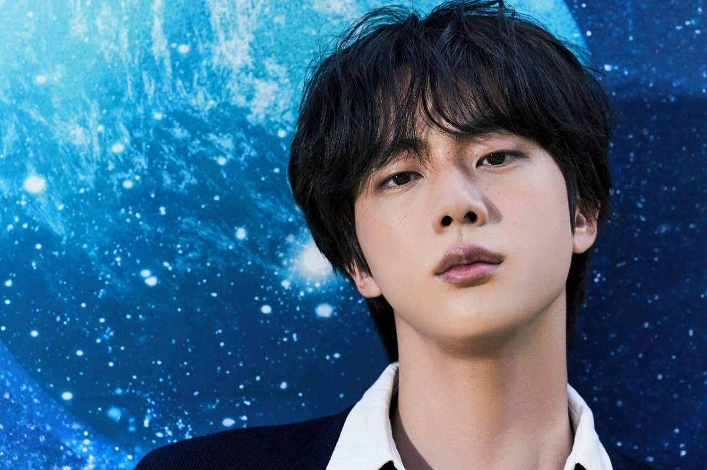
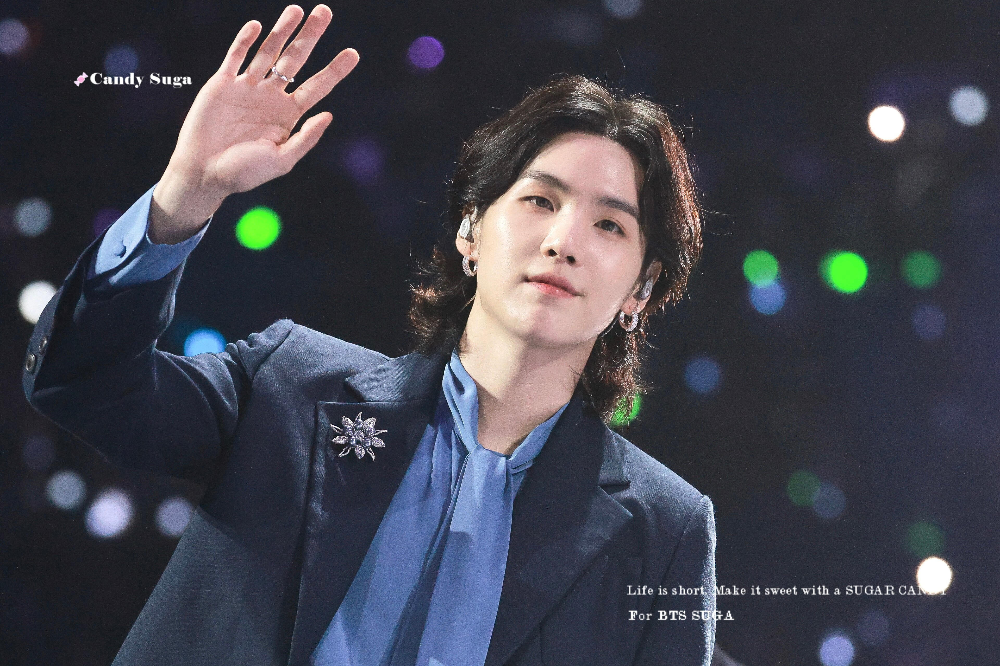
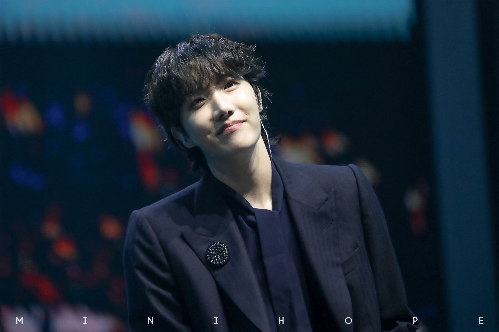
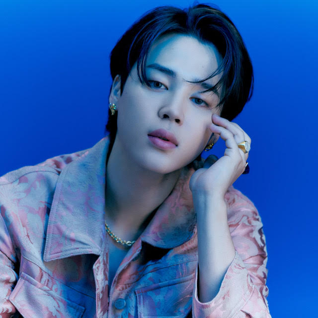
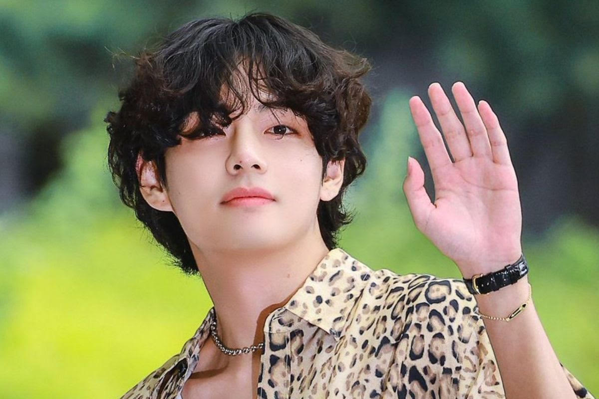
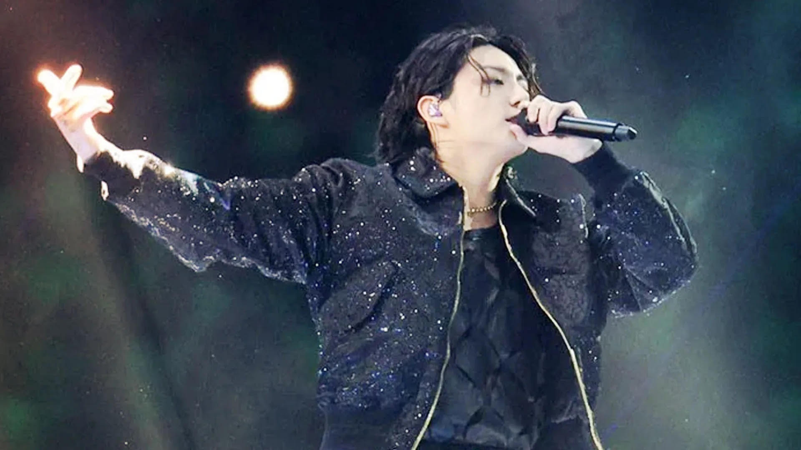

Kim Namjoon (aka RM) is a rapper and the leader of BTS, the top South Korean boy band in the world. He was born in Seoul, South Korea on September 12th, 1994. Namjoon was the first member to join BTS when he was 15 but they debuted when he was 18. Before that, he was an underground rapper, Runch Randa. Namjoon is also known for his IQ score of 148 & scored 900 on the Test of English for International Communication (TOEIC) exam when he was in middle school. RM recently made his official solo debut in 2022 with the release of his studio album Indigo. The rapper and frontman of the K-Pop global sensation, is cherished by ARMY for his stable leadership, compassionate nature towards his team members, and his evocative speeches about self-love, and fighting stereotypes.
Learn more about Kim Namjoon...
Kim Seokjin or Jin is a vocalist and the oldest member of BTS. He was born in Anyang, South Korea on December 4th, 1992. When walking on the streets of his hometown, Jin was scouted by Big Hit Entertainment as a college student. And so, Jin was the fourth member to join BTS. The oldest member is known for his handsome and charming looks along with broad shoulders, nicknaming himself Worldwide Handsome. The vocalist released his debut solo single "The Astronaut", which he co-wrote with the British rock band Coldplay. Jin has an introverted personality but always cares for his members, he is friendly, humourous and kind-hearted who loves his fans.
Learn more about Kim Seokjin...
Min Yoongi (aka SUGA) is a rapper, songwriter, lyricist, producer, composer and pianist amongst multiple other things. He was born in Daegu, South Korea on March 9th, 1993. Yoongi was also an underground rapper before BTS, producing and making music since he was 13. Growing up, the rapper was born into poverty. Soon, he started having anxiety attacks and became depressed. That's when he noticed Big Hit were having auditions. Yoongi became the second member of BTS in 2010 when he was 17. Suga described all his struggles in his mixtape (Agust D) released in 2016 and another one (D-2) in 2020. The rapper is ranked as number 4 in the fastest rappers in Korea. Although Yoongi gives off a stoic persona, in reality, he is very shy and introverted. He goes above and beyond for his members and fans.
Learn more about Min Yoongi...
Jung Hoseok or J-Hope is a rapper, singer, songwriter, producer, and main dancer of BTS. He was born in Gwangju, South Korea on February 18, 1994. Pre-debut J-hope was part of a street dance team called Neuron. Soon, his dancing led to interest in singing so he auditioned for Big Hit Entertainment. J-hope was the third member to join BTS. However, the rapper struggled a lot during his trainee days that he almost dropped out from the debut lineup. But Jimin and Jungkook cried for him to come back, a decision that brought him to the peak of success. J-hope released his first solo mixtape, Hope World, in 2018, entered the highest charts. In July 2022, he made his debut as a solo artist with Jack in the Box, preforming the album at Lollapalooza. The rapper is very friendly and welcoming, he thrives when in a group of friends and brings smiles wherever he goes.
Learn more about Jung Hoseok...
Park Jimin is a vocalist and a dancer in BTS. He was born in Busan, South Korea on October 13, 1995. He was the top student in modern dance in the school and that led him to audition for Big Hit Entertainment. Jimin was the last member to join BTS, therefore got the shortest training time of a year. When BTS debuted, Jimin got a lot of hate and viewed himself as "fat", leading him to go into depression and starved himself until Jin got him out of it and he started eating regularly. He also worked the hardest and constantly stayed up all night to practice. The vocalist is known for his stage presence and angelic voice.
Learn more about Park Jimin...
Kim Taehyung or V is a vocalist in BTS. He was born in Daegu, South Korea on December 30th, 1995. Pre-debut, he was the "secret member" of BTS. Fans were unaware of his existence as his agency wished to keep him a surprise. In 2016, Taehyung made his acting debut with a supporting role in "Hwarang: The Poet Warrior Youth". He has made multiple OSTs for dramas. Taehyung is known for his deep voice and striking visuals, ranking 1st in the “Top 100 Most Handsome Faces of 2017" and mutiple times in the "Most hansome faces in Korea".
Learn more about Kim Taehyung...
Jeon Jungkook is the main vocalist, center and the youngest of BTS. He was born in Busan, South Korea on September 1st, 1997. He received many offers from entertainment companies but decided to join Big Hit Entertainment after hearing and falling in love with future member RM's rap. The youngest has done many tings despite his young age, including preforming "Dreamers" alone at the World Cup in 2022. Jungkook is known for his crazy, beautiful voice and the ability to effortlessly grab anyone's attention.
